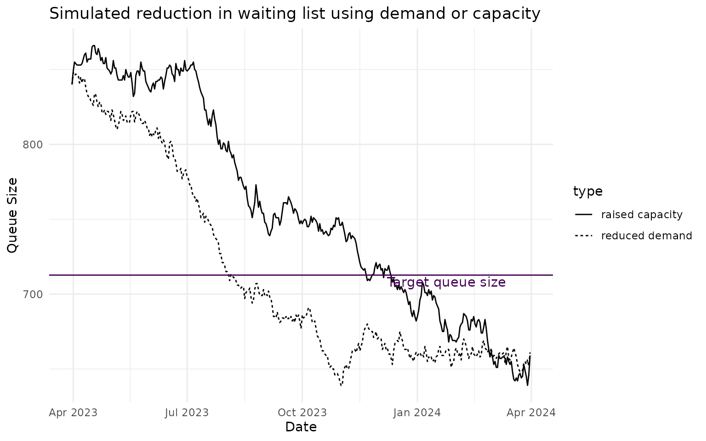
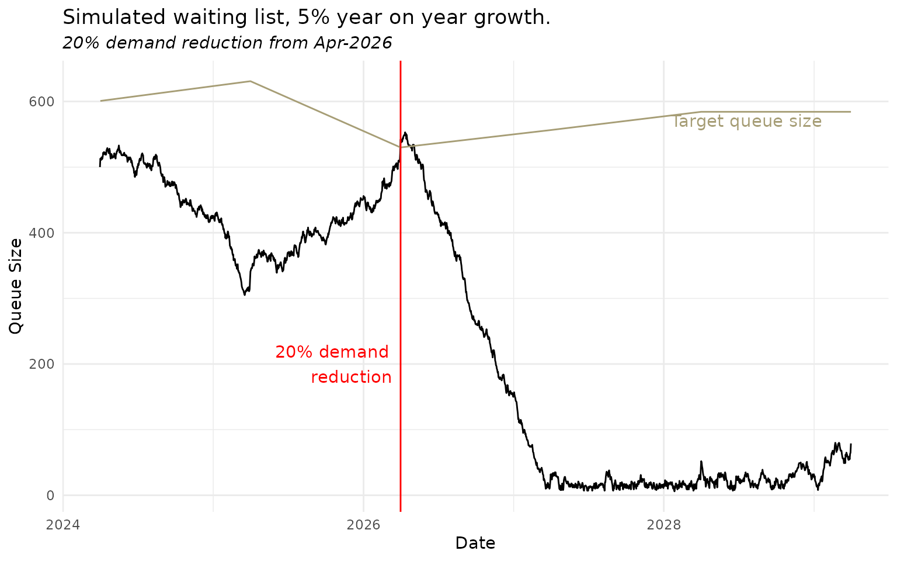
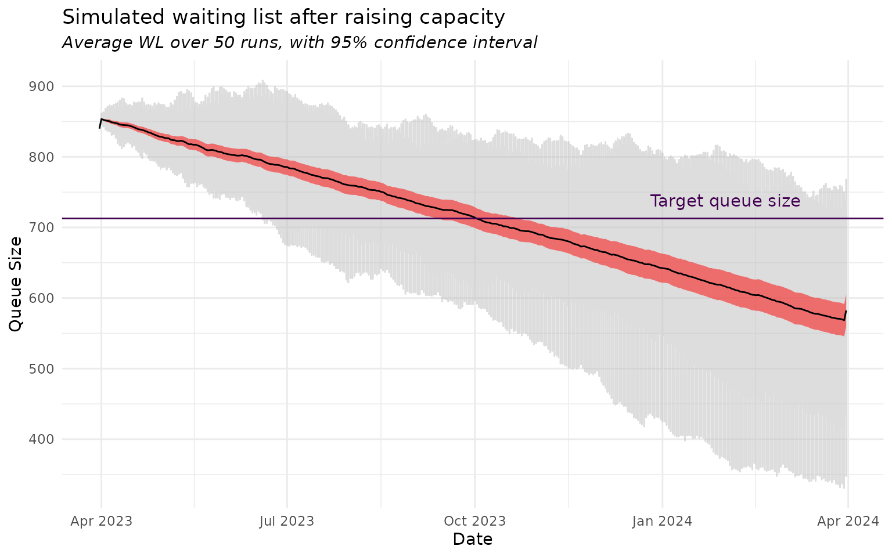

Exploring waiting list management strategies with simulation
Source:vignettes/waiting_list_sim.Rmd
waiting_list_sim.Rmd
library(NHSRwaitinglist)
library(ggplot2)
# set up a theme for our charts
theme_set(
theme_minimal() +
theme(
plot.subtitle = element_text(face = "italic")
)
)
# Fix the random number seed for this vignette
# Don't do this in real world application
set.seed(123)Introduction
When working with waiting lists, we may start with trying to understand current burdens, demand, capacity, load etc. If we have a planning dimension to our work, we may also want to ask ‘what if….’ or ‘how long until…’ questions of our waiting list. Simulation, based on the properties of our waiting lists (or assumptions about how they will change), allows us to ask these questions and test out hypotheses.
The following vignette acts as an example, where we are are modelling a waiting list for a UK NHS hospital for a surgical speciality. The process might have the flow such as:
- a patient presents to General Practice (GP)
- a GP refers the patient a hospital ‘outpatients’ clinic
- the clinician in the clinic lists the patient for surgery (entering the waiting list)
- Once the patient has receive their surgery, they leave the waiting list.
We will consider this against an 18 week standard for waiting times.
Scenarios
We will imagine three scenarios where we want to use simulation to project our waiting list into the future:
- where we need to bring a high waiting list down into control
- where our waiting list can afford to grow (e.g. we want to constrain capacity, such as sub-contracted care at other organisations)
- how our list will change with referral growth and a service change
The final example will demonstrate averaging over repeated simulation, and estimating uncertainty, using Monte Carlo methods.
Please remember that the examples here are simulations. They will vary due to chance each time they are run, and that is their strength. Do not expect to get exactly the same result when repeating; expect to get the same average results.
Set-up
We will imagine a surgical treatment speciality at a UK NHS hospital. The NHS standard for this waiting list is to have 92% of patients seen and treated by 18 weeks.
Using the NHSRwaitinglist package, we can calculate a
few important statistics for different scenarios, starting required main
waiting time to meet our target:
# What is the quantile value for target waiting list,
# based on 92% of exponential distribution
qt92 <- qexp(0.92)
# Target mean wait for 18 weeks
target_mean_wait <- calc_target_mean_wait(18, qt92)
target_mean_wait
#> [1] 7.126656This makes our target average wait 7.13 weeks, and this average independent of any demand/capacity. The average wait must be this value, or less, to meet 92% at 18 weeks.
1. Bringing down a waiting list
For our first scenario, we will assume the service received 100 weekly referrals and has a weekly capacity of 80 appointments. We describe this balance between demand and capacity as the ‘Load’, which is the ratio between demand and capacity: 100/80= 1.25. If the Load is greater than 1, then the waiting list will grow, and if it is less than 1 the waiting list will reduce.
Let’s imagine our service is already running with a waiting list of 840.
For simulation purposes, we need to set up the current waiting list before we can run the simulation of the future state. There are few ways to set this up, including supplying a real waiting list, simulate/generate it using the properties of the list, or we can manually dump a load of open pathways into the start of the simulation.
In the example below we simulate the current waiting list based on knowing that there are 840 on it, and 20 more referrals than removals per week (difference in demand and capacity): this means it will add 20 to the waiting list each week. If we divide that 840 on the waiting list by 20, we get 42 weeks.
We therefore need to run the simulation for 42 weeks, with the stated demand and capacity, to generate a waiting list of 840.
Remember that this is simulation, so it is stochastic. Any two runs will not be identical, but will lead to 840 on list on average.
end_date <- as.Date("2023-03-31")
# WL is 200, simulation is weekly, and capacity / demand difference is 20,
# 20 added to WL each week. Therefore 420 / 20 = 21, 21 week difference for
# sim start and end date: 7 x 21 = 147 days.
# We take 1 day away too, to discount the end_date
start_date <- end_date - (((840 / 20) * 7) - 1)
current_wl1 <- wl_simulator(start_date = start_date,
end_date = end_date,
demand = 100,
capacity = 80)
tail(wl_queue_size(current_wl1))
#> dates queue_size
#> 289 2023-03-26 784
#> 290 2023-03-27 784
#> 291 2023-03-28 797
#> 292 2023-03-29 803
#> 293 2023-03-30 804
#> 294 2023-03-31 812As an alternative, we could manually dump 840 open pathways into the current waiting list the day before our start date for the main simulation.
current_wl1 <-
data.frame(
Referral = rep(as.Date("2023-03-31"), 840)
, Removal = rep(as.Date(NA), 840)
)
# Only a single day in our waiting list so we don't need `tail()` this time
wl_queue_size(current_wl1)
#> dates queue_size
#> 1 2023-03-31 840What is the target for this service?
If we are governing our resources well, we want to allow a sustainable queue as this allows patients to be flexibly scheduled whilst still meeting our targets. All capacity comes at a cost to the system, so we are seeking a balance between demand and capacity, with a sustainable waiting list where people are seen within a given target time.
So our question is: what is the sustainable queue size for delivering 92% at 18 weeks, given 100 weekly demand?
target_queue1 <-
calc_target_queue_size(demand = 100, target_wait = 18, factor = qt92)
target_queue1
#> [1] 712.6656We have a target queue size of 712.67, and currently running a waiting list in excess of this, and load is >1, so the list will keep growing, without intervention, and average wait times will get longer.
Options for management
There are two ways to bring a waiting list like this down:
- Raise the capacity (“more flowing out”)
- Reduce the demand (“fewer flowing in”)
1. Raising capacity
Let’s imagine we are able to put an additional clinic in place that offers 25 more slots per week, taking our waiting list pressure down. We need to remember to include our waiting list into the simulation function, so it does not start from zero. We will run the simulation for one year then plot the waiting list.
raised_capacity_wl <-
wl_simulator(start_date = as.Date("2023-04-01"),
end_date = as.Date("2024-03-31"),
demand = 100,
capacity = 105,
waiting_list = current_wl1)
raised_capacity_queue <- wl_queue_size(raised_capacity_wl)
tail(raised_capacity_queue)
#> dates queue_size
#> 362 2024-03-26 653
#> 363 2024-03-27 649
#> 364 2024-03-28 645
#> 365 2024-03-29 639
#> 366 2024-03-30 646
#> 367 2024-03-31 6592. Reducing demand
Instead of raising capacity, let’s imagine we have put in new referral guidance that reduces the number of referrals coming in to the system, resulting in 5 fewer referrals per week. Again, we need to remember to include our waiting list into the simulation function, so it does not start from zero. We will run the simulation for one year then plot the waiting list.
reduced_demand_wl <-
wl_simulator(start_date = as.Date("2023-04-01"),
end_date = as.Date("2024-03-31"),
demand = 77,
capacity = 80,
waiting_list = current_wl1)
reduced_demand_queue <- wl_queue_size(reduced_demand_wl)
tail(reduced_demand_queue)
#> dates queue_size
#> 362 2024-03-26 654
#> 363 2024-03-27 655
#> 364 2024-03-28 653
#> 365 2024-03-29 656
#> 366 2024-03-30 652
#> 367 2024-03-31 661To visualise this, we will plot the queue against time, marking the target queue size.
combine_queue <-
rbind(
cbind(raised_capacity_queue, type = "raised capacity"),
cbind(reduced_demand_queue, type = "reduced demand")
)
ggplot(combine_queue, aes(y = queue_size, x = dates)) +
geom_line(aes(linetype = type)) +
geom_hline(yintercept = target_queue1, colour = "#440154FF") +
annotate("text", label = "Target queue size", x = as.Date("2024-03-31")
, y = target_queue1, vjust = 1.2
, hjust = 1.2, colour = "#440154FF") +
labs(y = "Queue Size", x = "Date"
, title = "Simulated reduction in waiting list using demand or capacity") The simulation above suggests that either maintaining the extra clinic until the end of the year (increased capacity) or reducing the referrals (reduced demand), would return the waiting list to just below the sustainable target.
2. Our waiting list can afford to grow
On the surface, we might assume that growing a waiting list is always a bad thing. When dealing with a health economy, we must consider the ‘opportunity cost’: what benefits we forgo by using our resources in one place rather than another. When applied to a large, complex health economy, this might mean we increase a waiting list, within an acceptable limit, in order to release resources/staff/funding to be used elsewhere. So our task here is to work out how large the waiting list can grow whilst still meeting target, setting a time period to do it over, then reducing capacity accordingly.
In this scenario, we will consider a system with 50 referrals per week, 50 capacity per week, and a current waiting list of 82. We have a queue load of 1 so, baring natural fluctuation, we would not expect our queue to grow or reduce. We have the same target as in scenario 1.: 92% within 18 weeks. This means our target average waiting time would be 7.13.
Let’s first calculate our target queue length:
target_queue2 <-
calc_target_queue_size(demand = 50, target_wait = 18, factor = qt92)
target_queue2
#> [1] 356.3328Our current waiting list is 82, with a target of: 356.33. This means we can afford to let our queue size increase by 274.33.
If we are willing to let our waiting list grow over the next 6 months, this equates to:
current_queue <- 82
queue_growth <- target_queue2 - current_queue
weeks_to_grow <- 26 #52 weeks per year / 2 for 6 months
queue_growth / weeks_to_grow
#> [1] 10.55126We can then assume a reduced capacity by 10.55 per week, and allow
the queue to grow. In general, if this number is a decimal it is
sensible to make the conservative rounding choice that leads to the
lower queue growth. In this case it is to floor() the
growth to 10.
We can then verify this using simulation, following the steps in example 1.: set up the waiting list, simulate with our parameters, then plot:
current_wl2 <-
data.frame(
Referral = rep(as.Date("2024-03-31"), current_queue)
, Removal = rep(as.Date(NA), current_queue)
)
raise_wl_sim <-
wl_simulator(start_date = as.Date("2024-04-01"),
end_date = as.Date("2024-09-30"),
demand = 50,
capacity = (50 - 10), # 10 = floor(queue_growth / weeks_to_grow)
waiting_list = current_wl2)
raised_wl <- wl_queue_size(raise_wl_sim)
ggplot(raised_wl, aes(y = queue_size, x = dates)) +
geom_line() +
geom_hline(yintercept = target_queue2, colour = "#21908CFF") +
annotate("text", label = "Target queue size", x = as.Date("2024-04-01")
, y = target_queue2, vjust = 1.2, hjust = 0, colour = "#21908CFF") +
labs(y = "Queue Size", x = "Date"
, title = "Simulated waiting list after allowing waiting list to grow")
3. How our list will change with referral growth / service change
This is a more complicated example where we will make two assumptions over a 5-year modelling period:
- Referrals will grow 5% per year
- In year 3, a service change will come into place that removes 20% of the referrals.
To simulate this, we will need to set up our data inputs to reflect the assumptions. We will set up a scenario starting with 100 referrals per week, 100 capacity per week, and a waiting list of 500. We will do our range calculations for the sustainable list size, assuming a slightly different target from the first 2 examples: 95% should be seen within 18 weeks.
# Target mean wait for 95% at 18 weeks
target_mean_wait3 <- calc_target_mean_wait(18, qexp(0.95))
target_mean_wait3
#> [1] 6.008548
target_queue3 <-
calc_target_queue_size(demand = 100, target_wait = 18, factor = qexp(0.95))
target_queue3
#> [1] 600.8548In this case ours sustainable waiting list is 600.85, but this is only true at the start of the period. Given our growth and change assumptions, we need to construct a control table that maps these values out to power the simulation. This is worked out below in R, but users may find it easier to build in a spreadsheet application.
ctrl_tbl <- data.frame(
start_date = as.Date(c("2024-04-01", "2025-04-01", "2026-04-01"
, "2027-04-01", "2028-04-01"), format = "%Y-%m-%d"),
end_date = as.Date(c("2025-03-31", "2026-03-31", "2027-03-31"
, "2028-03-31", "2029-03-31"), format = "%Y-%m-%d"),
demand = 100,
capacity = 100
)
# Manually setting sim properties to illustrate:
ctrl_tbl$demand[2] <- ctrl_tbl$demand[1] * 1.05
ctrl_tbl$demand[3] <- ctrl_tbl$demand[2] * 1.05 * 0.8 # 5% growth, 20% reduction
ctrl_tbl$demand[4] <- ctrl_tbl$demand[3] * 1.05
ctrl_tbl$demand[5] <- ctrl_tbl$demand[4] * 1.05
ctrl_tbl
#> start_date end_date demand capacity
#> 1 2024-04-01 2025-03-31 100.0000 100
#> 2 2025-04-01 2026-03-31 105.0000 100
#> 3 2026-04-01 2027-03-31 88.2000 100
#> 4 2027-04-01 2028-03-31 92.6100 100
#> 5 2028-04-01 2029-03-31 97.2405 100We also need to update target queue size. We could do this by setting based on the current demand, the yearly demand or by the anticipated demand at the last period. Here, we will take the second approach, but this requires a calculation for each row.
ctrl_tbl$target_queue_size <-
calc_target_queue_size(demand = ctrl_tbl$demand
, target_wait = 18
, factor = qexp(0.95))
current_wl3 <-
data.frame(Referral = rep(as.Date("2024-03-31"), 500)
, Removal = rep(as.Date(NA), 500))We now need to run the simulation for each line of our control table.
A handy way to capture this in R is to use a
list(). First we will initialise a list of the right size
to receive our output, as this is an efficient way to capture it. We can
run the first line of the table through the simulation with the current
waiting list:
# Initialise a list of the same length as the table
sim3 <- list(NROW(ctrl_tbl))
# Run the first line and current waiting list
sim3[[1]] <-
wl_simulator(start_date = ctrl_tbl$start_date[1]
, end_date = ctrl_tbl$end_date[1]
, demand = ctrl_tbl$demand[1]
, capacity = ctrl_tbl$capacity[1]
, waiting_list = current_wl3)We can now run through the rest of the table using a loop,
referencing the last run as our waiting list e.g. during run 2, our
waiting list is run 1, achieved by the sim3[[i - 1]]:
# Loop through and simulate each section
# Loop picks up each previous waiting list
for (i in seq(2, 5)) {
sim3[[i]] <-
wl_simulator(start_date = ctrl_tbl$start_date[i]
, end_date = ctrl_tbl$end_date[i]
, demand = ctrl_tbl$demand[i]
, capacity = ctrl_tbl$capacity[i]
, waiting_list = sim3[[i - 1]])
}
queue_over_time <- wl_queue_size(sim3[[5]])We can now plot and see what our list looks like. Key points to note are:
The target queue size is calculated at each
start_date, i.e. 1st April, and the way the lines are draw connects this points with a straight line.Depending on the variation in the simulation, the waiting list peaks above the sustainable target value in 2025/26, before the demand reduction pulls this list back down to a sustainable size.
We have a case for releasing some capacity from late 2026 onwards, as our list is of a sustainable size.
ggplot(queue_over_time, aes(y = queue_size, x = dates)) +
geom_line() +
geom_line(aes(y = target_queue_size, x = start_date)
, colour = "#A69D75FF"
, data =
data.frame(
target_queue_size =
c(ctrl_tbl$target_queue_size, ctrl_tbl$target_queue_size[5]),
start_date =
c(ctrl_tbl$start_date, ctrl_tbl$end_date[5])
)) +
annotate("text", label = "Target queue size", x = ctrl_tbl$start_date[5]
, y = ctrl_tbl$target_queue_size[5], vjust = 1.2, hjust = 0.2
, colour = "#A69D75FF") +
geom_vline(xintercept = as.Date("2026-04-01"), colour = "red") +
annotate("text", label = "20% demand\nreduction", x = as.Date("2026-04-01")
, y = 200, hjust = 1.1, colour = "red") +
labs(y = "Queue Size", x = "Date"
, title = "Simulated waiting list, 5% year on year growth."
, subtitle = "20% demand reduction from Apr-2026")
4. Estimating uncertainty via Monte Carlo methods
The examples above have shown how we can simulate waiting lists, but each is a single simulation run based on random draws from a distribution. They change each time due to change, but in a predictable way. We can get an idea of the uncertainty around the methods above by using Monte Carlo methods: running them repeatedly and averaging over the values.
Using example 1., we can repeatedly run it in several ways. This method wraps the simulation and the queue size functions in inside a function. This means that each run will return a data.frame of daily queue sizes.
sim_func <- function(run_id) {
sim <- wl_simulator(start_date = as.Date("2023-04-01"),
end_date = as.Date("2024-03-31"),
demand = 100,
capacity = 105,
waiting_list = current_wl1)
cbind(wl_queue_size(sim), run_id)
}
# sequence to iterate over
run_sequence <- 1:50
raised_capacity_wl_mc <- lapply(run_sequence, sim_func)The replicate function above runs the simulation 50 times, and returns a list of the 50 replicates. In reality, we would run it many more times than this, but 50 keeps this vignette’s build time to a minimum and leads to wider more visible confidence interval in the chart below.
We then need to take our output, reformat the list, and chose how we
will average over the events. In the example below, I pull it into a
single table then aggregate by average values per day. This will not
always be the right approach, but it depends on your question. In this
case, it helps give a more robust estimate of the average effects and
allows us to put point-wise percentile range or confidence interval
around them, using the daily means of the simulation. Alternatives might
be to fit linear or non-linear models across the range and use the
confidence intervals / bands from this approach, as demonstrated in this
vignette from the nlraa package.
mc_bind <- do.call("rbind", raised_capacity_wl_mc)
mc_agg <-
aggregate(
queue_size ~ dates
, data = mc_bind
, FUN = \(x) {
c(mean_q = mean(x),
median_q = median(x),
lower_95CI = mean(x) - (1.96 * (sd(x) / sqrt(length(x)))),
upper_95CI = mean(x) + (1.96 * (sd(x) / sqrt(length(x)))),
q_25 = quantile(x, .025, names = FALSE),
q_75 = quantile(x, .975, names = FALSE))
}
)
mc_agg <- data.frame(dates = as.Date(mc_agg$dates), unlist(mc_agg$queue_size))We can now produce a similar plot to the one in section 1, but using the average value and 95% confidence interval.
ggplot(mc_bind, aes(x = dates)) +
geom_line(aes(y = queue_size, group = i), alpha = 0.5, col = "grey") +
geom_ribbon(aes(y = mean_q, ymin = lower_95CI, ymax = upper_95CI)
, alpha = 0.5, data = mc_agg, fill = "red") +
geom_line(aes(y = mean_q), data = mc_agg, col = "black") +
geom_hline(yintercept = target_queue1, colour = "#440154FF") +
annotate("text", label = "Target queue size", x = as.Date("2024-02-01")
, y = target_queue1, vjust = -1, colour = "#440154FF") +
labs(y = "Queue Size", x = "Date"
, title = "Simulated waiting list after raising capacity"
, subtitle = "Average WL over 50 runs, with 95% confidence interval")
The averaging has led to a straighter line for the trend and we have a range of uncertainty around the projection. Alternatively we could present the 25th - 75th percentile range.
This type of Monte Carlo process can be applied to various situation by building your simulation into a function, repeatedly executing that function (which could be in parallel), collected the results calculating summary statistics.